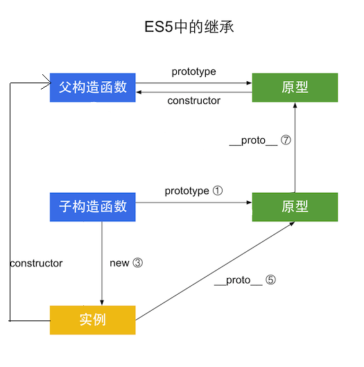

es5继承
- 寄生组合式继承
function A(type) {
this.type = type
}
A.prototype.sayType = function() {
return this.type
}
function B(type) {
A.call(this, type)
}
B.prototype = Object.create(A.prototype) //只有这里不同。
B.prototype.say = function() {
return 'my type is B'
}
var b = new B('B')
